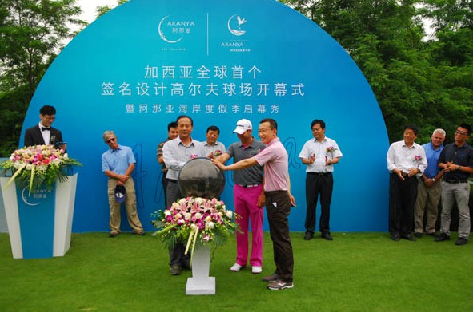
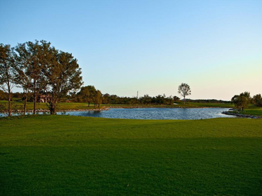

世界唯一 加西亚签名设计的links高尔夫球场

阿那亚拥有世界唯一的世界排名前十的西班牙著名球手——赛吉奥·加西亚签名设计的，占地1500亩的18洞级的LINKS高尔夫球场。球场建造耗时2年，造价高达3亿，绝对能给爱好高尔夫球运动的您以世界顶级的体验。
对于高尔夫发烧友来说，由著名球手亲自设计的球场，是稀少而珍贵的。同时，高尔夫球场是林克斯风格，起源于苏格兰，这种建在海岸边并且大量保留原生沙地、草种、植被的高尔夫球场，在城市中是很难见到的。球场保留下最天然的湿地，不仅是给业主，也给当地的数百种天然鸟类栖息之地。

除了拥有世界顶级的高尔夫配套设施外，阿那亚还拥有海滨天然马场、滨海儿童乐园、帆板俱乐部、拳击和滑翔伞俱乐部，为您量身定做最具海岸风情的体育运动项目。